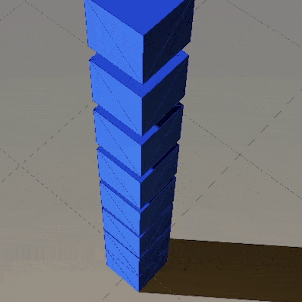
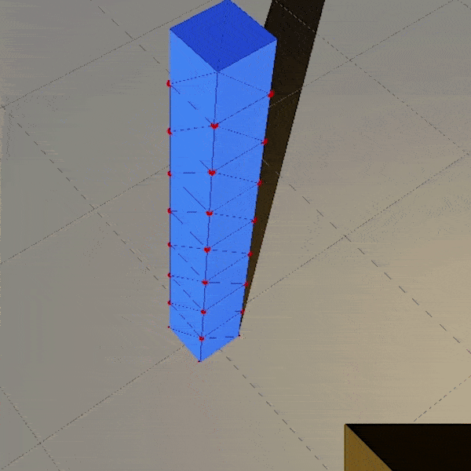

I write most of my coding projects in C++ and/or Python. Here are some recent ones.
Rendara3D
Rendara3D (R3D) is a 3D graphics/physics engine that I wrote for learning purposes. It is written in C++ and OpenGL.
 
Features include
- Instanced rendering, Shadows, Bloom, HDR.
- Rigid-body physics: discrete collision detection and response.
- Manifold generation using the Separating Axis Theorem
- Box stacking
- Entity-Component-System (ECS) based on archetypes for looping selected entities in a cache-friendly way
- dear ImGui interface for editing shaders at run-time, changing settings and debugging.

You can visit the github page of the project here.
Cells
Cells is a C++/Python software for simulating the collective motion of biological cells crawling on a 2D substrate.


The code has been designed to be flexible for testing out many different models. Features include
- Python C++ interface for easy scripting
- Integration of langevin equations of motion with custom forces.
- Cells can be composed of multiple disks (for now, maximum of 2).
- Contraction/Expansion cycle of cell body can be simulated.
- Binary format (HDF5) for saving files.